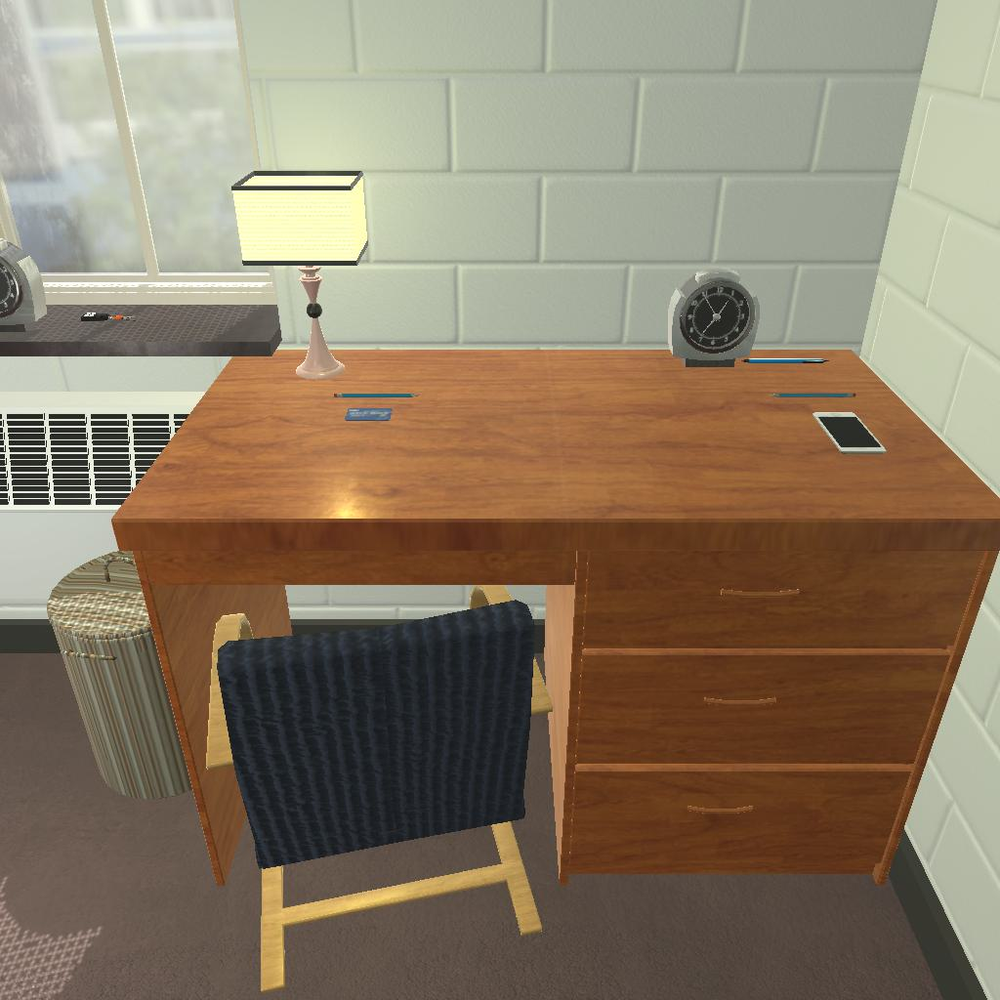

---------------------------------------------------------task: 8---------------------------------------------------------
--------------------------------------------------------------------------------------------------------------------------------------------------------------------
--------------------------------------------------------------------------------------------------------------------------------------------------------------------
Step:--------------------------------------------------------------------------9-------------------------------------------------------------------------------
----------------------------------------
VLM Prompt:
Image1:
**Instruction**
1. Analyze the provided image to identify all visible household objects, focusing on those relevant to the task description "put a laptop in desk."
2. Use the analysis of the image and the task hint "The agent must find an object of the desired type, pick it up, find the correct location to place it, and put it down there." to answer the question: what is the most reasonable action in the choices for the task description "put a laptop in desk"?
4. Decide and write the answer using the template: The answer is: (i): , where i is the real number. If there is no desired object in the image, search every place based on **Initial Observation** to find the object. And if no one is exactly correct, choose a similar answer.
**Initial Observation**
You are in the middle of a room. Looking quickly around you, you can see bed (1), garbagecan (1), desk (1), sidetable (1), drawer (1-5), laundryhamper (1)
**Answer Choices**
(1): go to bed 1
(2): go to garbagecan 1
(3): go to sidetable 1
(4): go to drawer 1
(5): go to laundryhamper 1
(6): go to drawer 4
(7): go to drawer 5
(8): open drawer 3
(9): close drawer 3
(10): examine drawer 3
**Answer**
Let's think step by step by following the instructions.
----------------------------------------
----------------------------------------
Original Response:
First, we analyze the image provided. We can see a desk with drawers, a chair, a lamp, a clock, and some miscellaneous items on the desk's surface, including what appears to be a pen and a mobile phone. There is no laptop visible on the desk or in the immediate surroundings.
Next, we refer to the task hint, which suggests that we need to find a laptop, pick it up, and place it on the desk. Since there is no laptop visible in the image, we must search other places based on the Initial Observation.
The Initial Observation lists several objects and locations within the room, including a bed, a garbagecan, a sidetable, drawers, and a laundryhamper. The most logical places to look for a laptop would be in the drawers, as laptops are often stored in such places when not in use.
Considering the answer choices, the most reasonable actions to achieve the task of putting a laptop in the desk would be to go to one of the drawers and search for the laptop. Among the options, we have "go to drawer 1," "go to drawer 4," "go to drawer 5," "open drawer 3," "close drawer 3," and "examine drawer 3." The action of examining a drawer seems most appropriate for finding an object within it, so we should choose the option to examine drawer 3.
The answer is: (10): examine drawer 3.
----------------------------------------
----------------------------------------
>>> Refine Original VLM Response and Get Pure Action: examine drawer 3
----------------------------------------
-----------------------------------------------------------------
Running time: 14.577313899993896 seconds
Total Money: 2.1033000000000004
-----------------------------------------------------------------
-----------------------------------------------------------------
Text Observation:On the drawer 3, you see a desklamp 1, a alarmclock 1, a laundryhamperlid 1, a alarmclock 2, a cellphone 1, a creditcard 1, a pen 1, a pencil 1, a pencil 2, and a keychain 1.
-----------------------------------------------------------------
UNSUCCEED